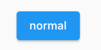
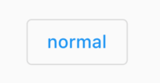

3.2 按钮
Material 组件库中提供了多种按钮组件如ElevatedButton、TextButton、OutlinedButton等，它们都是直接或间接对RawMaterialButton组件的包装定制，所以他们大多数属性都和RawMaterialButton一样。在介绍各个按钮时我们先介绍其默认外观，而按钮的外观大都可以通过属性来自定义，我们在后面统一介绍这些属性。另外，所有 Material 库中的按钮都有如下相同点：
- 按下时都会有“水波动画”（又称“涟漪动画”，就是点击时按钮上会出现水波扩散的动画）。
- 有一个
onPressed属性来设置点击回调，当按钮按下时会执行该回调，如果不提供该回调则按钮会处于禁用状态，禁用状态不响应用户点击。
3.2.1 ElevatedButton
ElevatedButton 即"漂浮"按钮，它默认带有阴影和灰色背景。按下后，阴影会变大，如图3-6所示：

使用ElevatedButton非常简单，如：
ElevatedButton(
child: Text("normal"),
onPressed: () {},
);
3.2.2 TextButton
TextButton即文本按钮，默认背景透明并不带阴影。按下后，会有背景色，如图3-7所示：

使用 TextButton 也很简单，代码如下：
TextButton(
child: Text("normal"),
onPressed: () {},
)
3.2.3 OutlinedButton
OutlinedButton默认有一个边框，不带阴影且背景透明。按下后，边框颜色会变亮、同时出现背景和阴影(较弱)，如图 3-8 所示：

使用OutlinedButton也很简单，代码如下：
OutlinedButton(
child: Text("normal"),
onPressed: () {},
)
3.2.4 IconButton
IconButton是一个可点击的Icon，不包括文字，默认没有背景，点击后会出现背景，如图3-9所示：

代码如下：
IconButton(
icon: Icon(Icons.thumb_up),
onPressed: () {},
)
3.2.5 带图标的按钮
ElevatedButton、TextButton、OutlinedButton都有一个icon 构造函数，通过它可以轻松创建带图标的按钮，如图3-10所示：

代码如下：
ElevatedButton.icon(
icon: Icon(Icons.send),
label: Text("发送"),
onPressed: _onPressed,
),
OutlinedButton.icon(
icon: Icon(Icons.add),
label: Text("添加"),
onPressed: _onPressed,
),
TextButton.icon(
icon: Icon(Icons.info),
label: Text("详情"),
onPressed: _onPressed,
),